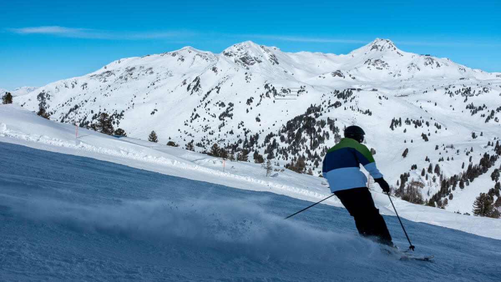
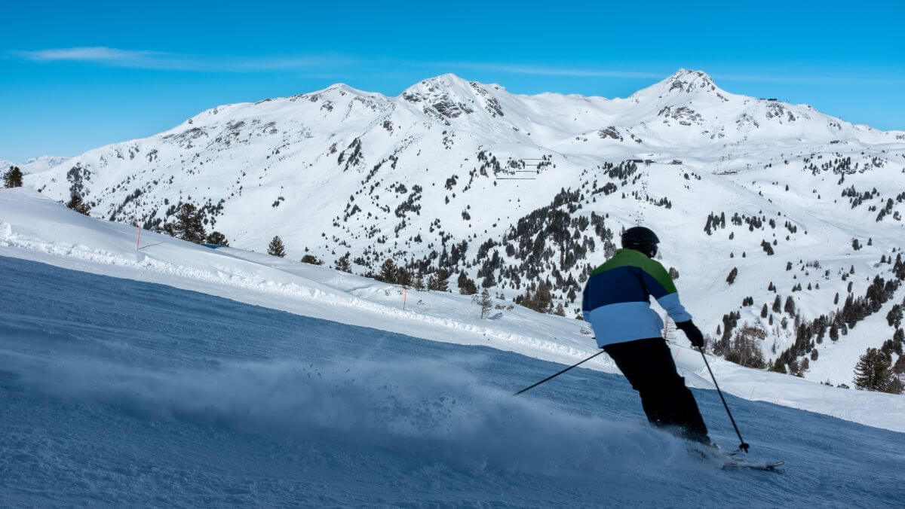

BIRIYANI dates back to the Mughal Empire. The main ingredients are basmati rice, spices, a base of meat, eggs, or vegetables, and many optional ingredients such as dried fruits, nuts, and yogurt. It is believed that Mumtaz Mahal – Emperor Shah Jahan’s queen for whom the Taj Mahal was built as a tomb for – inspired the dish in the 1600s.

HOLI is another noteworthy name in the list of festivals of India. Considered the festival of love and the festival of colors, it signifies the arrival of spring and the victory of good over evil. It is celebrated all over the country with a lot of enthusiasm and fervor. Typically, the celebrations start on the eve of the festival.

BADRINATH TEMPLE dedicated to Lord Vishnu is one of the four Char Dham and Chota Char Dham pilgrimage yatras. It finds its mention in the 108 Divya Desams devoted to Lord Vishnu in India. Situated at the height of 10,279 feet, the temple is surrounded by lofty snow-clad Himalayas with Alaknanda River flowing by.

Basilica of Bom Jesus, Goa.The construction of this church started in 1594 and was completed in 1605. Situated in Goa, you can see baroque architecture in this church. The church is around 400 years old and now has been declared as a World Heritage Site by UNESCO. The old charm of churches can still be found in Basilica of Bom Jesus, and that is why it attracts tourists from all corners of the country.
 
